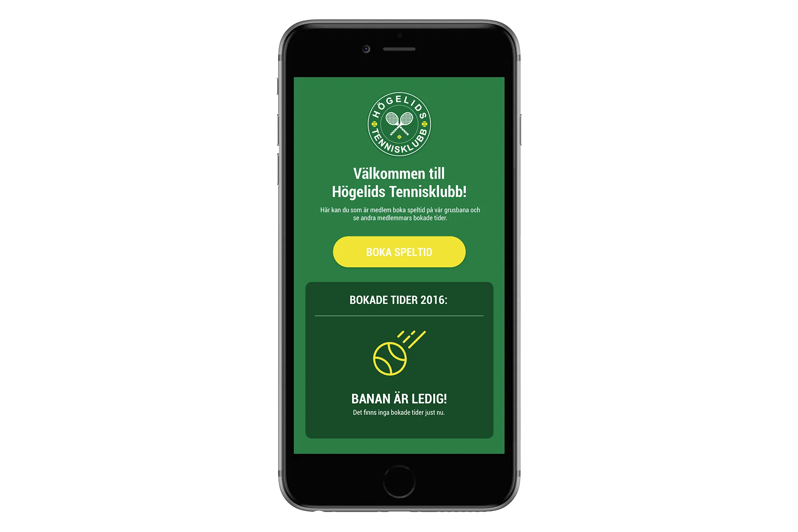
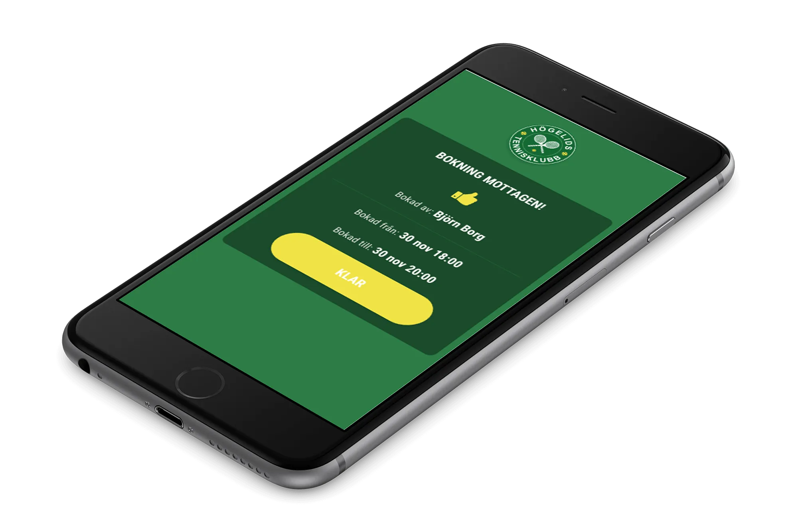

Bokningssystem
| 21 November 2016
Ett idéellt arbete åt en tennisklubb där jag är medlem. Det kom fram önskemål om möjligheten att kunna se om banan var bokad online och då även möjlighet att kunna boka tider. För närvarande har bokning av banan skett genom att skriva upp sig på en kalender som suttit uppsatt vid banan.
Då vissa medlemmar har lång resväg har de inte velat chansa på att banan skulle vara ledig och har då struntat i att spela. Tanken är att applikationen skall fungera som en anslagstavla för bokade tider samt att få fler medlemmar att nyttja tennisbanan.

Designprocessen började med att skissa upp en idé med penna och papper. Eftersom det är en liten applikation användes digitala designverktyg tidigt i processen. Sedan skapades en klickbar prototyp som delades med olika medlemmar för att samla in feedback.
Webbtjänsten utvecklades med fokus på smartphones. Visionen är att tjänsten skall visa god översikt över bokade tider samt att det skall kännas lätt att boka en ny tid.

Säsongen 2017 är premiären för applikationen. Då skall feedback samlas in så den kan förbättras ytterligare.
Andra projekt